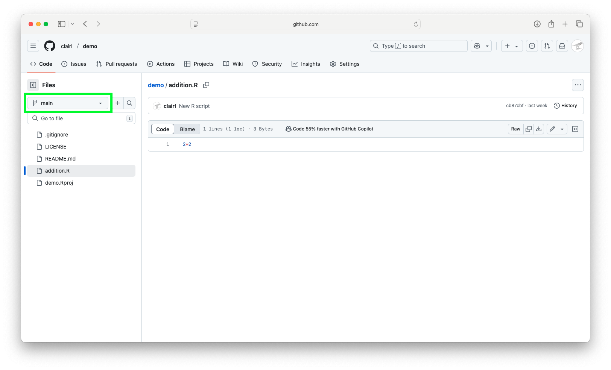
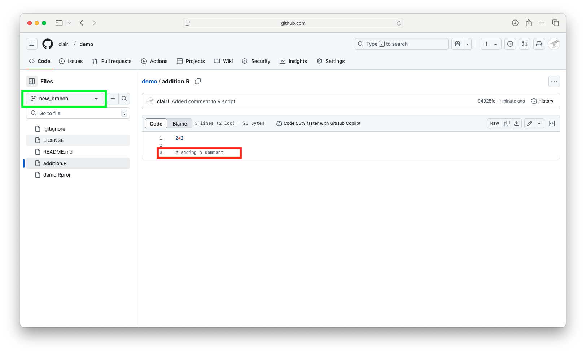

Luc Clair
University of Winnipeg | ECON/GECON 3201
Pull requests: A way for contributors to suggest changes
Branching and Merging: Like Git, GitHub supports creating branches for different features or experiments
There are a couple of ways to start our workflow
Why do it this way?
main branch.gitignore and demo.Rproj.gitignore files are special files where we include a list of files we want to exclude from our GitHub repository
demo.Rproj is the R project file.gitignore and demo.Rproj are now on GitHub.com2+2addition.Raddition.R is a new file, which is why we see green plus signaddition.Raddition.R has been removed from the origin repoaddition.R is back in the repomain (older repos may use master)Creating a new branch is akin to creating a parallel universe for your project
main branchWorkflow:
mainmain branchnew_branch and click Create BranchWe can now edit files without altering the main branch
E.g., add a comment to your R script


A README.md is a markdown-formatted file that serves as the main landing page for your GitHub repository
A good README typically answers the following:
There may be certain files we wish to exclude from our GitHub repo
.gitignore file.gitignore file tells Git what files to leave out of a committemp.txt has been added to the .gitignore file**.txt in the .gitignore file